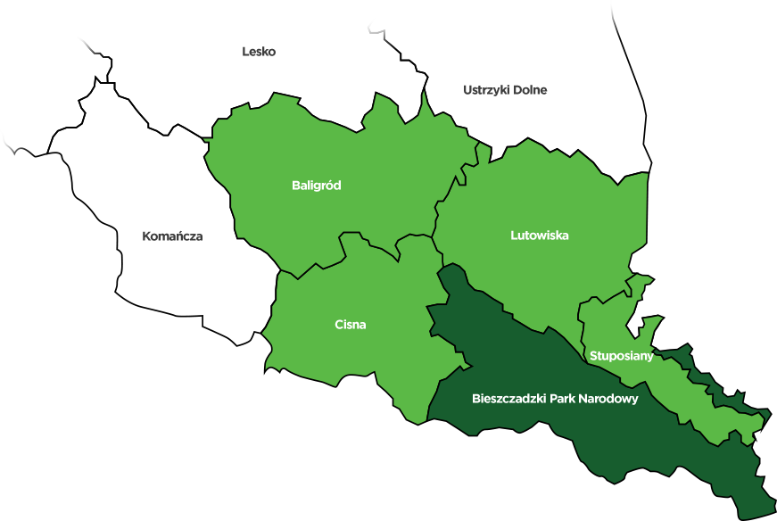
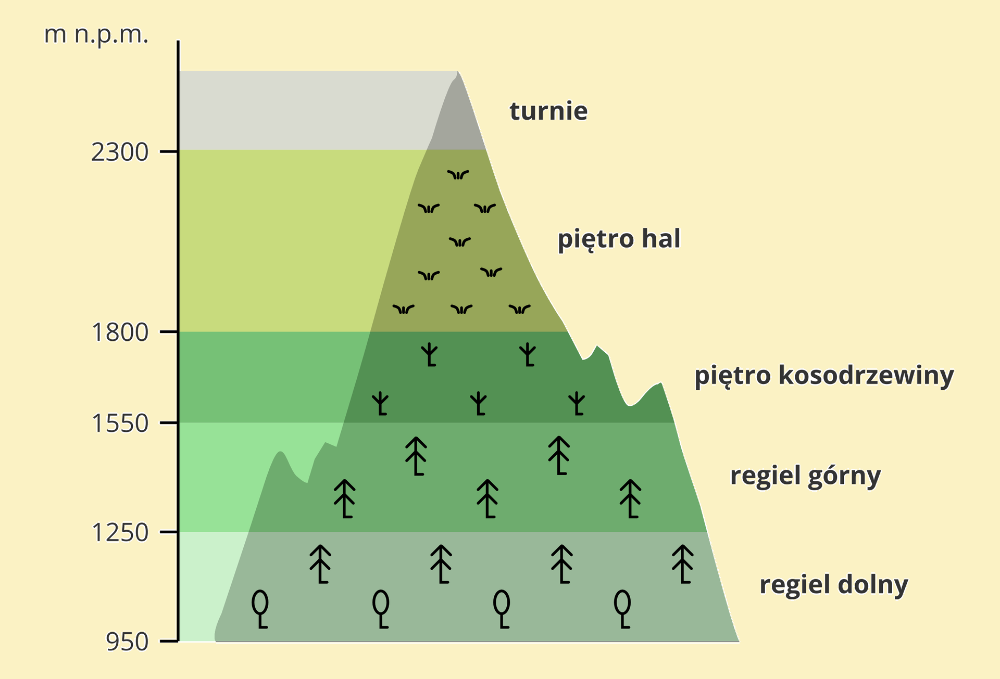
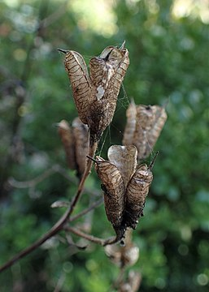
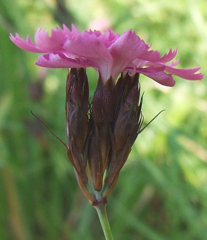
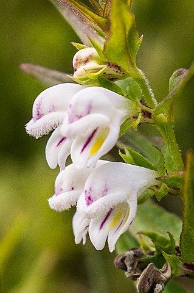
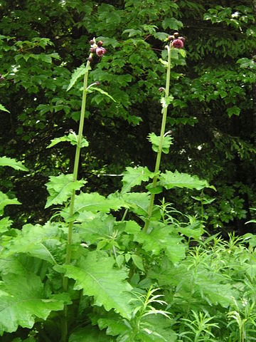
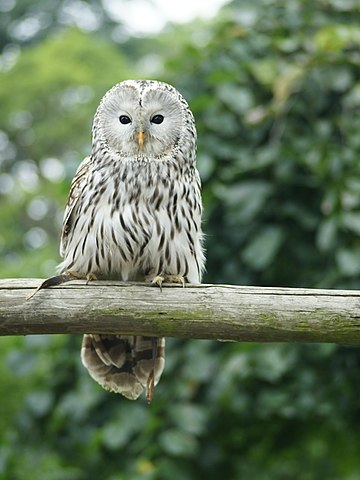
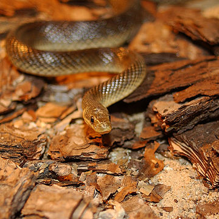
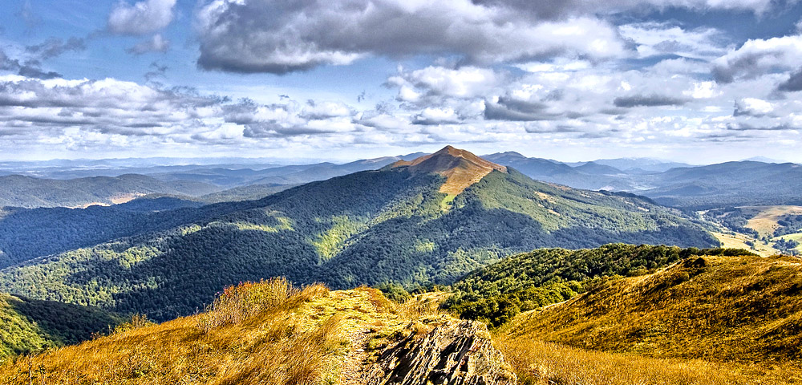

Wstęp:
Krótki opis:
Bieszczadzki Park Narodowy to jeden z 23 parków narodowych w Polsce. Położony jest on w Bieszczadach Zachodnich, za to utworzony został w 1973 roku. Jest trzecim co do wielkości parkiem narodowym na terenie Polski i największym parkiem narodowym w polskich górach (jego powierzchnia wynosi obecnie 292,02 km²).

Logo:
Przedstawia ono rysia euroazjatyckiego - jest on gatunkiem rzadkim i chronionym. Według danych z 2011 roku w Polsce żyje tylko 296 osobników tego gatunku.
Flora i fauna:
Flora:
W Bieszczadzkim PN wyróżnione są dwa piętra roślinno-klimatyczne: regiel dolny i połoniny. Blisko 80% jego obszaru zajmują naturalne lasy liściaste i mieszane z bukiem, olszą szarą, jaworem, świerkiem i jodłą.

Charakterystyczne gatunki roślin to:




I wiele więcej.
Fauna:
W granicach Bieszczadzkiego Parku Narodowego występują prawie wszystkie krajowe gatunki dużych ssaków drapieżnych: niedźwiedź, wilk, ryś i żbik, a także roślinożerne: żubr i jeleń karpacki.
Charakterystycznym ptakiem dla tego regionu jest puszczyk uralski.

Gady reprezentują m.in. żmija zygzakowata (jadowita) i wąż Eskulapa (niejadowity).

Inne:
Ścieżki przyrodnicze:
Na terenie Bieszczadzkiego Parku Narodowego istnieje kilkanaście ścieżek przyrodniczo-historycznych, które w większości prowadzą wzdłuż istniejących szlaków pieszych.
Widoki:
